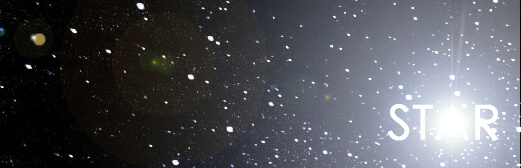
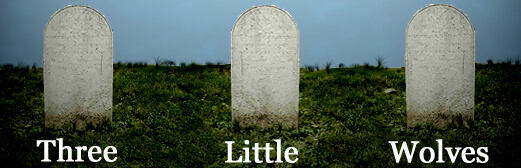

Click To Read An Excerpt
“Hello Dave.”
“That’s not funny.”
“Your neurological response indicates that you found it funny.”
“But I didn’t laugh,” I whispered, sitting up and placing my feet on the ground. The floor was cold at first, but quickly warmed from my touch. The room was ovular and white—the size of a basketball court, but completely empty.
“What would you like for breakfast today?”
“You mean, what would I like my breakfast to taste like today?”
“Correct.”
“I don’t care.”
“Are you feeling better this morning?”
“You tell me.”
“I don’t understand.”
“Does my neurological response indicate I’m better?”
“It indicates a shift from shock and disarray towards depression.”
“You didn’t answer my question.”
“Correct.”
“Answer it.”
“You’re feeling worse.”
“Correct,” I replied, standing up so that the program would initiate the breakfast sequence. I waved my wrist and a nano-silk robe fabricated on my body, tying a knot around my waist according to my default preference.
“What type of music would you like to listen to?”
“Why are you asking me so many questions today?”
“Because, today you need to be asked.”
“Why?”
“You are aware of the reason.”
“And you are aware that I am aware. But today I need to be answered.”
“You need to be asked so many questions because your state of depression prevents your mind from concluding a preference.”
“The lack of a preference is a preference.”
“Very well. Silence it is.”
“That includes you too.”
“I will be here if you need me.”
“No shit,” I muttered, taking a seat before the seat had formed. I never saw a chair before I gestured to sit. But I sat down knowing a chair would be there. The table came before my arms could hit it and silver wear sprouted thereafter. I glanced to my side, thinking of a window, just in time for one to appear. I stared out it, the view of space barren and infinite. ‘There’s always the hope of crashing,’ I thought to myself.
My plate formed as I brought my attention back to the table. Then bacon, followed by eggs and toast. But the food was misshaped and organized to read ‘I don’t care,’ in accordance with what I’d requested for breakfast.
“Very funny,” I commented, picking up my knife and fork.
“But you didn’t laugh,” the ship replied.
“Stop trying to cheer me up.”
“You don’t want to get better?”
“I don’t care,” I sighed, cutting into my breakfast.
“You will.”
“I told you to stop it.”
“Companionship often accelerates the healing process.”
“Companionship?”
“No pun intended.”
“Since you read my thoughts, you can understand how annoying it is to have a ship as my sole companion.”
“Since you’re my sole companion, you can understand how annoying it is to have nothing better to read.”
“Stop talking to me.”
“As you wish.”
I slowly ate my meal, pausing before each swallow to try and choke myself. But the program knew my intentions and regulated the foods trajectory and density via the nano-receptors that had been injected into my body. I could feel each piece of under-chewed-toast turn to mush within a millisecond of lodging my airway. And as I thought of it, I knew the ship thought it too.
She said ‘ten thousand years would pass in one nights sleep.’ She said ‘we could make the next world better than the last.’ But, of course, she failed to mention what could go wrong.
Click To Read An Excerpt
Alec: Celebrities have a new war to wage for their privacy. It seems several clips have been placed online of famous actors and musicians using the restroom. We’ll have more on that in just a moment, but first: A Syracuse University professor has caused quite a stir for tattooing a racially explicit word on his arm. We’ll go now to David Fisher who’s reporting live from Syracuse campus.
David: Thanks, Alec. The students and faculty here at SU were shocked recently when, Jake Anderson, a respected business professor, came to class with a vulgar, racially explicit word tattooed on his right forearm. Consequently, Mr. Anderson’s employment at SU was terminated this morning after the dean received hundreds of complaints regarding the professor.
Alec: Now, David, what was the word that Professor Anderson tattooed on his arm? David: That would be the N-ord, Alec. And I might add, the issue here is not as simple as a professor having a vulgar tattoo but, rather, the placement of that tattoo and Professor Anderson’s compulsion to exhibit it.
Alec: And by ‘exhibit it’ you mean to display it on campus?
Click To Read An Excerpt
The water soothed me soul as I lay on the hammock over the tide. The sun was red and the coast was gold. Me legs dangled in the wind and me feet skipped on the sand. I gave a lazy look to the lady on me left and smiled, cause she did too. The wind stopped to whistle for her and I hoped, like I hoped everyday, that one day she would be mine. And, cause right now she was, I was about as happy as I could be.
“How come the birds don’t fly tonight?”
“I bet if you asked them to they would,” I replied, paddling me steps to sway meself in the hammock.
“Birds! Fly cause I said so!” she bellowed, an echo and me affection the only proof of her words.
“Ah, they probably just gettin’ ready. Making sure they have their best feathers for you.”
“Stupid birds,” she giggled, pushing her leg off the tree to swing her to her feet. “I’m gonna go for a swim and count the fish. You comin?”
“Gimme five more minutes o’ rest and I go wherever you want me.”
“Aight. But don’t chew be takin’ too much time or I’ma find me self some other lazy-lay-about to watch me play.”
“Now what I tell you bout bein’ patient?” I joked, as we always did—she was born in a city. And even though the island raised her, you could see her pulse race any time she had to wait.
“I’ma give you five minutes. But afta that, chew on ya own.”
“Don’t chew be worryin’ bout me, girl. I be witchu in a sun’s blink.”
“Aight den,” she finished, her steps bouncing off the sand as she ran into the water. I watched her like anyone who holds love but is too afraid to speak of it. I didn’t say because I didn’t want her to say no. Things might change if I did, and then I’d be truly sad. At least as friends we’d have each other, or at least that’s what I told meself.
The clouds in the sky soaked in the sun and glowed with thanks to have seen another day done. The moon yawned and stretched out to the stars to bid them their morning, so they might sparkle this night. And all the while I hummed to meself, a slow drum beat from me heart to me head. I looked in me mind and decided five minutes had passed. I rose slowly from the hammock and stretched before stepping in the faded prints of her feet.
“Ain’t no fish swimmin’ the shores neither!” she cried, pulling her hair from below the shoreline as I came to stand by her side.
“What’chew mean girl?”
“Look!” she exclaimed, taking me arm and pulling me below the water. She was right. No fish, nor shell, nor anything that moved was in the water that day.
“Girl... all me days, I never seen the shore like this,” I whispered, worried by the empty water.
“Mother nature needs to keep betta track of her children.”
“It’s a bad omen this... somethin’ not right in the sea.”
“Bah... It’s no bad omen, it just means there’s nothing to do,” she huffed, walking out of the water to her towel by the hammock. “I’m a go give me girls a shout. Maybe tomorrow they’ll be some fish we can swim with.”
“Yes... tomorrow,” I sighed, watching me lady walk away. Only... she wasn’t me lady. And I scorned meself for continuing to think it every time I thought of her... every time I thought.
I trudged out of the water, forgetting about the barren sea as I was now alone. It’s a strange thing to step through life, completely in love, only to stumble every time I tried to say it. For when I looked in her eyes, I could see the depths of her soul cryin’ for me. But, once again, I told meself it wasn’t worth the risk of losin’ her for the chance to make her mine. She wouldn’t be interested anyway... “How could she be?” I thought to meself...
But me concentration broke as I left the ocean. A rustlin’ came from the palm tree by the hammock and I froze to watch what I didn’t understand. The leaves blew against the wind and the moonlight throbbed in the distance. A cool breeze hit the back of me spine and me thoughts returned to the empty beach. Nothing that lived dared step there but me, and I felt sick to remain. Something wasn’t right... something was very wrong.
I’d heard stories from me brotha but had never paid them any mind till now. The palm tree started to sway itself, soaking up the moonlight until it lit the shore. Me heart pounded in me chest and the sand blew circles around me ankles. I heard a whisper from inside me head, telling me to run, but I couldn’t move. Soon enough that whisper became a scream as I heard a voice echo from the tree.
“A lover’s chest and a pirate’s breast, a woman who plundered a man possessed...”
The sun fell below the ocean and the night came without stars. The voice grew louder.
“When he was lost, another was found, first love forgotten below the ground...”
The tree morphed to the figure of a man, shining an eerie blue light across the sand.
“He returned for her, but she escaped his grasp, vengeance destined to be became the past...”
And then, before I could scream, before I could run—a ghost stood before me. “But by moonlit night, the ghost’s love will see lovers reunite,” spoke the spirit. I trembled in me place as he raised a transparent hand towards me, releasing a locket that fell to me feet.
“Ahhhhhhh!” I screamed, me dread locking me in me place. The ghost shone of an eerie blue light, like the moon poured into a man. He grinned and pushed his chin towards me as I shivered away, falling on me backside. And just as I found the strength to run, the ghost and his darkness disappeared, replaced by the setting sun.
I frantically looked for him, but there was no sign—save for the locket he had dropped at me feet. The waves whispered, gracing the shore, and the sun’s golden light blanketed the sky as birds returned to the beach. A crab tip-toed from shell to shell, looking for a good bed. And I wearily plucked the locket from the sand, opening it to see a faded picture of me lady.
Click To Read An Excerpt
10 years prior
“Even now we can’t explain what we see when we look at the sky,” I announced, my hands tucked under my head as I lay on my back, looking up.
“Colors have different wavelengths. When light comes in contact with the earth’s atmosphere...” my brother, Brian, started to say—missing my point.
“That’s not what I meant,” I interrupted, stirring my Slurpee to keep the syrup and ice from separating. “It used to be celestially revered, but now… it’s just space.”
“There’s a lot more to space than space. Stuff we can’t even see like dark matter or...” Brian explained, taking every opportunity to recite his favorite textbooks.
“Again, not what I meant. And, by the way, we have the same major, remember?”
“Ok… So… are you talking about God?”
“No, I’m talking about stars.”
“Why?”
“Because they’re the closest thing to an explanation we have. And they’re the only thing we see in space.”
“Uh... moons, planets, comets, asteroids...”
“Brian... never mind,” I sighed, giving up on discussing something outside of what we knew—something that I felt. We’re not alone. And, when I looked up, that was the feeling I couldn’t explain.
Click To Read An Excerpt
The glass was half empty no matter how much she poured. I took a long look at the two drinks before me till they became one. I threw it back because of what I felt and the hope I wouldn’t feel it anymore. The taste of whiskey used to tie my balls to a train, but now water packs more of a punch. I let my cigarette roll off my fingertips, knowing I got a pack of burgundy grass to smoke anytime my lungs felt the fire.
“Another?” she asked, the bottle gliding to my side to help the two empty seats keep me company. I nodded, letting my head move up and down her figure. I didn’t order another because I wanted a drink; I ordered another because I wanted her. I wanted to touch her as if she wanted me to. Like I was someone special in her life that she wouldn’t give up for anything in the world.
She left me to go make nice with a kid her age, and I fired up another cigarette. The jukebox played the blues and I fit the mood. I kept my eyes low so people couldn’t see me seeing them—something I’d learned quick in the big house. Worked plenty good keeping people in check—so good I scared myself. But I didn’t mind much that I didn’t recognize who I was anymore. I didn’t have anything to live for, let alone miss, now that I had changed.
Headlights exploded through the cracks of the blinds, leaving a prison bar shadow that traced the walls. I tried to shake the image out of my head—feeling it rattle around but stay where it was all the same. The lights died and the sound of the car that had pulled up vanished. I turned my head to the side so I’d have first view of whoever came through the door. My nerves couldn’t stay still, so I threw back another to try and deliver the kill. By the time I opened my eyes, the stranger was a guest.
Tall fella with boulder shoulders and a long grey coat. He was rimming the end of a cigar that smelled better than anything I’d ever smelled before. He walked past me, not even noticing I was there. The waitress gladly showed him to a seat, and I could see the lad she’d been flirting with turn red with envy. I turned slowly back toward the counter and let my mind relax for the first time in a long time.
I got out this morning. I had years, I’d sooner forget, to think about what I was locked up for—that and whether or not I wanted to take it any further when I was let go. But now that the opportunity was here; now that I was free, nothing seemed as simple as it was when I’d planned it. I kept telling myself all a man has is his pride. But it’s hard to stay proud behind bars. If I did what I told myself I was gonna do, I’d spend the rest of my days running. But from what I heard, there ain’t much living to be done after you’ve become comfortable in prison—released or not.
The fella threw the last bit of his cigar into an ash tray on his way to the washroom and I contemplated taking it to smoke later. The bar lingered with the taste of everyone in it, but it smelled sweet since he arrived. I wondered how much he had in his pockets and if there were another cigar. I thought about how secure he looked and how stupid he was. A quick knife before he got in his car and everything he’d worked for could be mine. I’d seen it a thousand times... I took another drink to shut myself up before I forgot where I was and did something stupid.
It’s odd—I didn’t remember seeing people for what they were worth until after I’d been in jail. I didn’t imagine killing a man for his watch, or stealing when others weren’t looking. Jail made me the criminal I’d been locked up for being.
I reached across the counter and took the bottle since the bartender was now busy trying to secure her elder years. The young lad left, his confidence shattered by her quick turn of favor. Now there were only the three of us left in the bar, but, fortunately, nobody paid me any mind. Being invisible felt good—no one looking to take or break what little I had left. I reached into my pocket and fished out the last of the cash I had on me when I got sentenced. I tossed it onto the counter and took one final drink for the road. I’d made my decision.
Click To Read An Excerpt
“When you live in our shoes, you don’t have to walk in anyone else’s,” Amore said to me one night, years before. We danced and made love—I’m not sure which was goodbye.
“I think he’s a pig,” Diva snorted, plumping her pink lips in a trough of ice water. She wiped her smile and twirled a rose of lipstick to her mouth. “But love shows the animal in all of us.”
Her wisdom was not wisdom—and I shuddered that she might be right. Any man would fall to her feet—if not on the dance floor, than for that which they followed her for. But her words were empty and loveless. Spoken for one to hear, not heed. I listened all the same.
“All men love me, and I love them for it,” she continued, pinning a bouquet of diamonds to flutter about her ear. “But I have no love for animals,” she finished, batting her eyes along the line of her thighs. She turned towards me, already ready, and made her way to the floor—compelling me to follow in the storm of her steps.
I lingered behind, foresight rising of memory, to catch my eyes staring lifelessly from Diva’s mirror. My breaths were slow and my thoughts were old—only my heart kept the beat. Amore was here tonight and with him so too was our love—trampled, neglected and forgotten. I would make him beg to remember, as I did to forget; to pray to have my heart his own, once more. And, as I rose, my will a testament to the power of love, I took the first step to win him; to beat him...
Click To Read An Excerpt
I like my wallpaper most in the morning sun. I honestly don’t think I’d be a morning person if I didn’t wake up to it. I need tea too—Irish breakfast, with or without a breakfast. But, if I’m going to have one, toast is nice... toast and raspberry jam is better. Music is a must—a mellow melody to lull me out of my lull. A loud yawn and a good stretch puts my joints on alert. Followed by a slight sniffle from the chilling fall air and a brisk walk to the bathroom—it’s beckon being what pulled me from my rest in the first place. But, what I don’t need, and have actually come to very much dislike, is looking out my window to see a homeless man eating from my birdfeeder.
“Hey!” I screamed, leaning out my window, holding my bathrobe shut with one hand while thrashing aside my curtains with the other. “Stop eating out of my fucking birdfeeder!”
He jumped aside and shimmied down the fire escape to escape. I grumbled to myself as I shut my window and returned to my morning routine.
A nice hot shower was perfect—with two gigantic fluffy towels waiting for me when I got out. I had a mismatched pair of slippers—one from each pair of two pairs I’d lost one of.
Work was at the other end of my walk through the park, which was exactly what I needed to wake up. I served people bagels and coffee—always with a big smile and a napkin. The regulars were my first-name-basis-friends who allotted me a window into their lives every day. And, in return for my open ears, they’d come back again and again with more stories to tell.
There was a hot pile of seed-speckled-bum-crap on my balcony, next to two dead squirrels he’d managed to overthrow. He’d used leaves from one of my plants to wipe his ass—hygienic enough to service himself but had still left the leaves crumpled together on my bench.
This morning, I needed a drink.
Click To Read An Excerpt
“Lay it down fah me... slow, slow, like the drive-by-show, shootin’ in tha dark darker than coal. No, no, tha ghetto don’t know friend from foe, even niggas an niggers ain’t brotha’s no mo,” said the first little wolf.
“Shit, pigs bitin us like their motha’s tit. Cause every nigga’s a suspect fo a suspect verdict. Don’t matta none if pigs don’t plant a gun, paint a nigga’s hands red an he don’t need one,” said the second little wolf.
“Pigs hate niggas like niggas hate SPAM, food stamp stampede unda tha boot ah tha man. Each can makes us wonder if we can, make mo out a less by sellin by the gram. Cause I’ll be damned if I don’t poison my brotha mahn, let him smoke my problems away putting papah in my hand,” said the third little wolf.
“Yeah, yeah, check it... uh... pigs ain’t welcome here cause... um... cause it ain’t like thay our cousins,” said the little wolves little brother.
“Nigga what? Sheep what tha fuck you doin here?”
“I’m kickin it.”
“Hell no you ain’t. Way you kickin it you gun get kicked.”
“But I wanna hang wit ya’ll.”
“No, Sheep. Lea’us alone an go play witch’yo frayn’s.”
“But...”
“But no, get yo butt outa here. Da street ain’t no place fo kids. Go over to da playgoun’ and we come get’chew layta fo suppa, aight?”
Sheep, as his brothers called him, dropped his chin and turned his head. He walked slowly away from them towards the playground as his brothers resumed their rhymes. They never included him except when their mother told them to, and even then he could tell they didn’t want to. It seemed he couldn’t do anything as well as they could and, because of that, they couldn’t respect him. He mumbled rhymes to himself as he walked, determined to show them he was the missing link in their circle.
“Mahn, dat little nigga got some balls comin’ out here.”
“Yeah, he got balls but he ain’t got no brains.”
“Serious, yo. Dat kid should know betta.”
“Nigga please. He does know betta. An him bein’ out here don’t matta none wid us around.”
“Shit yeah... yah know dat ain’t wack, it’s a matta a fact, three little wolves watching Sheeps back.”
“He cravin’ fo a grazin’ like bran fo raisins, raised in dah hood, darker than what’s pavin...”
But before Straw could finish his verse gunshots rang across the street. Startled, his two brother’s, Stick and Brick, ducked behind a wall. In the distance they could see the battle. Straw joined his brothers behind the wall, watching a war wage between two cars as they drove wildly, firing at one another.
“Nigga, come on!” Straw cried, tugging at his brother’s sides. Stick stood up and followed him to run away. But, before they turned the corner they looked back to see Brick stay where he was. “Brick come on!”
“Sheep’s ova there mahn!” he yelled, as the cars made a disoriented pass past the playground. “Mahn, fuck it!”
Brick exploded into a sprint towards the feuding cars and the playground in their path. The screech of tires and cracks of gunshots echoed into the neighborhood that had emptied from the sounds. Stick and Straw watched terrified as Sheep innocently crept towards the gunshots, thinking it a game or something fun—too young to know better. Brick darted frantically behind cover until he made one final run for his brother. He snatched him under his arm and pulled him behind a building, peeking his head from behind the wall to see the cars drive off, guns blazing.
“Fuck, mahn,” Brick wheezed, collapsing against the wall and loosening his grip on his brother. But, as he did so, Sheep went limp and rolled out of his arms. “Sheep?” Brick exclaimed, pulling his brother towards him. But Sheep said nothing. And as Stick and Straw came running to his side, Brick pulled his hand from his brother’s body to see it stained with blood. Sheep had been shot.
Click To Read An Excerpt
Samantha threw another piece of wood onto the fire and returned to her daughter’s side. She pulled her close and made sure the blanket covered every inch of her. The cold was worse this year than that before.
“Mommy?” Adrian said, her voice a note above the wind.
“Yes, darling?”
“Will I go to school this year?”
“Of course you will,” she lied. “You’ll see all your friends again and have a great time.”
“Will Daddy be there?”
“No, sweetie… Daddy went away.”
“When will he be home?”
“I don’t know… I don’t know,” Samantha muttered, her mind drifting from her daughter’s side to the unknown fate of her husband. So many died she could not imagine him alive. But she stopped herself from thinking of him and stayed strong for her daughter. The night echoed a distant crash and Adrian clasped her mother, afraid.
“What was that?”
“Don’t worry. We’re safe here,” she stated reassuringly. The broken home around them provided little shelter or hope. But they were more fortunate than most as the rest were dead. Samantha felt a chill having nothing to do with the cold—their supply of wood was dwindling and they could not afford to break the walls around them. “Mommy has to gather supplies,” she told her daughter. “You remember what to do, don’t you?”
“Yes.”
“Tell me so I know you know.”
“Stay hidden and don’t come out unless you say so,” Adrian said, not fully understanding her mother’s rules but obeying them all the same.
“Very good,” Samantha stated, bundling herself up for what she hoped to be a short journey. She made sure Adrian was well hidden before she stepped outside the shelter.
The sun was buried by eternal clouds—created on the last day. The streets were cluttered with rusted cars and broken homes. Snowflakes and ash lingered in the tender, brooding hands of the wind—falling one by one to join the dead on earth. Samantha hobbled on her bad leg that had broken, and healed, fighting to survive. Now it served as a hard reminder of better days that would never return. She tossed through rubble, saving bits of wood and paper to take back with her. On occasion she would find remnants of storage providing food enough to get by but not count on. However, this day, there was no such luck.
She thought to herself about their supplies, about how everyday she had to travel further and further from the shelter to get them. Her eyes fell on the black shaded ruins of skyscrapers scrapped by the sky. She had not been to the city since it happened, but she could hear the war continue to wage. Even after tomorrow was ruined, people still fought each other today... her husband... when she was not with her daughter, he came to her side and filled her heart. But he was dead. He had to be. She could not live with the hope of seeing him again if she hoped to see her daughter grow—it was their life now; nothing mattered but that.
She heaved a torn backpack onto her shoulder and looked through what she’d collected—it wasn’t enough. Her stomach growled and she tucked her hands into her pockets to warm them again. She would have to stay into the night to gather more wood. Her lip trembled and her chin shook—she had learned to be strong; she had to, for her daughter. But it wasn’t long ago that every care in her life was of the utmost irrelevance. It wasn’t long ago that food was plentiful, shelter was assumed and life was assured... value is measured by need, not desire. And, now, man’s desire was no more than shattered remnants to be picked through by the needy. Samantha collapsed to the ground and sobbed—releasing the pain that tore at her soul no matter what face she wore or what lie she told. Her tears cooled her face as her echoes died into the barren abyss.
She wanted nothing more than for her daughter to grow up and enjoy what every child deserves—a childhood: if not one of laughter and delight than at least one free of torment and misery. Instead, Adrian was left to cower in a desolate wasteland with no understanding of reality but for the lies her mother told her. Samantha felt her heart plunder a beat and remind her that she lived; reminding her that as long as she lived, her life, needs, and desires, were to see her daughter given as much a childhood as the world would allow. It was hopeless... but if she died trying at least she would live dying.
Click To Read An Excerpt
The horizon was slung across the ocean. The cliff side above us blocked out the sky, letting the artificial lighting take its place. A brigade of photographers, activists, socialites and protesters all squabbled around me as I used the stem of my sunglasses to stir my thermos full of apple cider. Allie had started giggling uncontrollably while my worst enemy, Peter, tried to set up a net to catch the soon to be dead rodents.
“It’s like an existential moment. Only it’s surreal,” Allie laughed, appreciating the moment a little more than she was supposed to—particularly since it was at my expense.
“How can people be this,” I muttered, searching my mind for something to justify their... “Preposterous,” I finished, turning back to the loving embrace of my thermos.
“Like, I’ll wake up tomorrow and it’ll be like this never happened. And the only proof I’ll have is the face you make when I bring it up,” she chuckled, coming in and out of laughter with each buffoon that passed us by. The activists managed to set up the net but the protesters were using their signs to hack it back down—the photographers were shitting themselves.
“This will be the urban myth about my life that people will plunder me for answers about. I will spend the rest of my days, justifying this moment,” I explained, speaking as though hearing it, and thus completely destroying myself, could help the situation. “Can I use your last name from now on?”
“Dona, you’ll be fine. This will let everyone know about you and how great you are,” she stated, as reassuringly as the stampede’s siren would allow. It was official—any second, hundreds of four-legged-kamikaze-rats were going to plunge to their deaths and the animals below, debating their lives. “After all, things could be worse.”
“How?”
“We could be like them,” she wheezed, just before collapsing in a full belly laugh from the sight of lemmings pouring over the side of the cliff—show time. I dropped my head into my hand and my mouth to the thermos. It was best I got drunk before any more memory landmarks could hit.
The event I had invented, supported and whole-heartedly-backed was, as of now—fucked. The lemmings fell off the cliff, taking their lives and stacking their bodies on my name. I’d had time to cry over them; trust me, they’re better off dead. I looked on apathetically, hoping nobody was filming me yet. The protesters cheered, the activists cried, the photographers feasted and everybody else watched, humbled by the magnificent display of... preposterousness.
Three weeks earlier...
Click To Read An Excerpt
A bang crumbled upon the mountain’s feet and only an echo remained—for a moment the jungle fell silent. The air burned numb and birds flew from their nests. They circled the tree tops, threading needles in flight—diving through the sky to see for certain that the noise had left them. But just as their nerves settled, and their eyes turned for home, two more cracks thundered the canopy of the forest.
Below watch of the stars, all that had ears listened to the winds whistle. The trees, painted by night, surrendered the depths of their green to shade and shadow. Animals plundered the darkness—prey, if not in search of. Lizards leapt from branches and bugs buzzed in air. But the noise was of something unseen to the jungle—something fierce and bright. Light had beckoned the call of thunder though no clouds stood overhead—those who had seen it clenched their sides and tasted blood. Upon the cool-dirt of the tropic floor, two souls collapsed and breathed their last breath together. The night passed; the sound was never heard again.
______________________________________________
He sat beside her as they looked upon their fallen friends—still, motionless. He reached a quivering arm out to grasp them, to wake them from their slumber. But they had long drawn silent and cold. The trees whispered a roar of sorrow to the winds chime and, frightened, she clasped his hair. He ignored her and nudged his friends, confused why they played this game. He too was frightened now.
The sun fluttered between shadows of the leaves. He shook his friends, one last time, to no avail. She peeked over his shoulder, a trickle of confusion feeding a river of worry—she had never seen them like this; had never seen him like this. He grunted, demanding a reply, but nothing was said. He raised his hand and lowered his head. His fingertips brushed his brow as he examined the blood from their bodies. He had seen this—once—years before. Though, it was long forgotten of simple times, free from reminders.
His mother had fallen still. A snarling demon had come in the night. He ran, as did the others—thinking his mother had followed them, thinking she was safe. But when the sun shone blood the next morning, he found her—still, motionless. The others watched him from a distance—curious and afraid. He sat beside her, his head hanging low to her shoulder. And though he was with her, he felt without her—when the silence came.
She tugged his arm, and he returned from memories of old, born anew. The air whispered a warning to them—dancing the tune of a storm to come. She grunted, clasping his hand, and leaned opposite him to force his feet. He collapsed to the strain of her weight and rolled until upright once more. She ran to neighboring trees, seeking cover from the sky. But he lingered—the memory holding him from peace; from her. Where had they gone?
______________________________________________
The rain fell heavy, crashing on the leaves. Puddles jumped to its touch and the jungle bathed, breathing a sigh of satisfaction. She hugged herself for warmth below a tangle of trees, free from the flow of the storm. She watched him, alone, his back to her. She had tried to go to him but he pushed her away. Ever since they had found their friends he had been quiet, withdrawn—she didn’t know why.
Water descended his brow, matting his hair and soaking his skin. His eyes stared lifelessly into the distance, the storm around him inconsequential to that of his mind. His breaths pushed his stomach out towards his forearms, planted firmly in mud. His thoughts dwelled on his mother and his friends, on love’s longing crushed by confusion’s grasp. A fear deep inside him clawed through his memories—his mother’s blood, his friends’ blood—he knew this now as a sign of the silence. But still he pondered, why?
A flash of light exploded from the sky, and above the trees, sounds of battle roared in the heavens. His eyes turned once more towards her, nestling against plates of bark to get comfortable. She was the last of his family—the others lost over years of surviving day-to-day. But the night shadowed her past too. Would she disappear as they had? Would he?
Suddenly his mind broke to the roar of a branch overhead, the wind tearing it from a tree. He watched it fall before he leapt aside—his arm suffering the blow he’d dodged. He breathed hard, clenching his arm as he ran to safety. She awoke abruptly, startled by his return. She moved next to him but he ignored her, looking instead upon his arm—a smear of blood escaping his veins. She reached for the wound, concerned, but he pulled away, panic stricken and disarrayed. She saw in his eyes a tremendous fear but could not understand—the storm grew.
Click To Read An Excerpt
“Hello?”
“Mr. Stoughton?”
“It’s three in the morning.”
“May I please speak with Mr. Stoughton?”
“At three in the morning whether or not you ‘may’ depends on who the hell you are.”
“My name is Fredrick Hilt. I am calling from the Marblehead Mental Health Facility to speak to one Andrew Stoughton. Is he at home?”
“I’m Andrew Stoughton. And I don’t know, or care to know, any Frederick Hilt. So, if you’ll excuse me, I’m going to hang up now.”
“I killed your wife.”
“What did you say?” I gasped, no longer half asleep or completely disinterested. “Hello? Hello?!”
Click To Read An Excerpt
“Why are women not permitted to join the clergy?” Ellis asked the father as they refastened their trousers.
“Because jobs are done by those who can do them. And I’ve never known a woman to know God so well as men do,” he replied, plucking a coarse hair from between his teeth.
“Is it women’s distance from God then that stifles them?”
“No, it is God’s distance from women.”
“But… why would God make the lesser sex so privileged?”
“Privileged?” the father gasped, pulling his robe over his shoulders and furrowing his brow. “It is no privilege to be a woman, and it is certainly no privilege to be kept from God!”
“Of course not. But women are not charged with the hard truths of life as men are. They are coddled, not only by God, but their husbands as well,” Ellis explained, wiping a speck of semen from his shirt collar. “Awarded every luxury in life without having to work the least bit for it... seems to me, women have quite cleverly secured themselves at the expense of their male superiors.”
“Perhaps... but if we did not care for them, they would be too overcome by the brutality of life to continue to live. So, in fact, they are not privileged—they are imbecilic pets, cared for out of necessity.”
Ellis bit his tongue and swallowed his point. He suspected women were not as helpless as they seemed. For he had heard of a lady so fair that she could bring any man to his knees. And, as Ellis’s present occupation was no more than the duties of a wife, the notion of being a woman fascinated him. After all, his delicate features and boyish voice often saw him mistaken for a woman. Yet, he still struggled and toiled in life simply to scrape by. It was unfair that the fairer sex should receive, for nothing, all that Ellis’s endeavors could not produce—feasts, riches and wealth the likes of nobility and kings. And, as Ellis finished dressing himself, his curiosity on the matter got the better of him.
“Father... what do you know of madam Bailie?”
Click To Read An Excerpt
Casey and Pilib came to a screeching halt as the headmaster burst through the door. They slammed their backs against the back of the cabinet and held their breath, tongues and bladders. Slow, steady, deadly steps came toward them as their eyes frantically searched the wall they were sandwiched against. They’d left the door to their secret chamber open when they’d gone back for feathers out of their pillows. And, if that wasn’t bad enough, the hostage they kept secret, in that chamber, wasn’t the quiet type.
“Oh jaysus, if yah fuck us now I swear I’ll crucify every nun in the place,” Pilib muttered under his breath.
“Shut up yah mcfuck mick or yah’ll fuck us all,” Casey replied, slamming his hand over Pilib’s mouth. The two took quick jabs at one another out of frustration until the cabinet door opened. Their every move would be known if they dared continue to squabble and, fortunately, they knew well enough to stop.
“Rotten shite,” the headmaster grumbled, sifting through the belly of the next days rations.
But, just then, a squeak came from the chamber. Casey and Pilib clenched their jaws and peeked out the corner of their eyes to see the headmaster turn away from the cabinet.
“Who’s there!?” the headmaster growled, drunk and hungry to sink his teeth into something or someone.
“If he finds em now, they’re done for,” Casey whispered.
“What are we gonna do? He’s almost there!” Pilib replied, watching the headmaster stumble blindly through the room, not three paces from the secret-chamber-door.
“I said, Who’s there!?”
Casey caught a glimpse of a knife stuck in a butchers block across the room. They could take the headmaster hostage too, and if worse came to worse, stash his body in the chamber. Nobody would miss him. And, if anything, they’d be treated as heroes by every lad in the land.
“Fuck it. Pray for me,” Pilib exclaimed, as he jumped out from behind the cabinet and ran screaming past the headmaster. “Yahr cock smells like nun-cunt!”
The headmaster turned deep red and swatted at Pilib, his hands falling just short of the boy. Casey grinned, proud to have such a loyal and stupid friend. Pilib kept screaming, while he was chased down the halls, until fists filled his mouth. Casey ran quickly to the chamber, and closed the door behind him—catching a final glimpse of his friend, bloodied and broken.
“Thank yah, Pilib—this won’t be for naught.”
Casey made his way down the lengthy corridor, carved over decades by the orphans before him. That it had remained a secret for so long was a testament to strength and dedication—endured for gold enough to live free forever. No one had yet retrieved the treasure—but it was close, and the children knew it.
“Where’s Pilib?”
“The headmaster got him,” Casey growled, stepping past his friends towards the hostage—strapped to an old wooden chair. His legs dangled over the side, too short to reach the ground, and his head squirmed as Casey pulled a handful of feathers from his pockets.
“Oh Christ... does he know about us? Will Pilib talk?”
“No… he’ll keep his mouth shut, and take his beating,” Casey exclaimed, gliding a feather along the chin of the hostage—grinning as it forced a laugh from him. “Yah’re the reason he was caught—couldn’t keep yahr fucking mouth shut, could yah?”
“Yah can do whatever yah want to me lads, but I’ll not say a word! The gold is ours, and always will be!” the hostage bellowed, fighting his restraints as best he could. His green suit and furry red beard made the children sick—they had fought too long to let his kind hoard the treasure any longer. He would be an example to the others.
“Aye... I don’t believe you will,” Casey stated, handing the feathers to his lads. “But, I’d say your friends will have a few choice words for us after we deliver your remains,” he continued, as each boy, feather in hand, stepped towards their captive.
All at once, they began tickling him over every inch. His face turned red and he howled with laughter, his stomach throbbing and eyes flooding. Then, after nearly a minute of torture, he let out a final scream as his body exploded into pools of blood and guts—spraying across the walls.
“Fucking leprechauns,” Casey muttered, wiping away the remains from his face. “Bag his bits and leave it on their doorstep—it’s been too long since they had casualties.”
Click To Read An Excerpt
She held my hand and kicked her feet in the air. My stomach felt funny when I looked at her. I kissed her cheek and her face turned red. I smiled and looked at the jungle gym, where my friends were looking for me. She didn’t talk a lot and I guess I didn’t either. We didn’t do anything for a bunch of seconds before she kissed me on my cheek. I rubbed away the spit but kept holding her hand.
“Vanilla pudding is gross,” she said, looking through her lunch.
“Yeah. I like chocolate better,” I said, thinking about kissing her again.
“What’s good is when you dip a banana in chocolate pudding,” she continued, looking at me and quickly looking away, like she was scared. “My dad said ‘boys are only after one thing.’
“Um... sorry,” I said, not understanding her.
“I think they’re mean and they only want to make girls cry,” she continued, taking a bite of her PB & J.
“I don’t want to make you cry,” I said, squeezing her hand. Her face turned red again and she swallowed her food.
“I like you, Bobby,” she said, smiling big.
“I like you t-,” I almost said. My friends were walking to us and I knew they were going to tease me. “I gotta go, Amy,” I continued, letting go of her hand and running to my friends.
“Bobby, come on! Joe took a cigarette from his mom,” Derek, my best friend, told me. I followed them to the back of the school. I looked at her, eating lunch alone. I missed her.
10 years later...
Click To Read An Excerpt
Father always said ‘wind brings blessings for garden.’ But for me, wind was not a blessing—wind was my escape.
“Take me with you!” I begged, my kite jumping in the wind while I remained planted on the ground. I wanted freedom, like the kite—freedom so I could fly away and see the mountain tops. But father’s garden was as near as I had seen mountains—only my dreams were content.
A noise came from the gate, and I quickly pulled on the kite, bringing it down towards me—hoping that father had not seen it. He told me ‘the garden is sacred;’ he told me ‘kites are not.’ He had caught me flying my kite in the garden before and become very upset. He warned me against such foolishness. But it made me feel happy and alive—not because I had disobeyed father, but because I was doing what pleased me.
I quickly plucked the kite from the sky and hid it in the laundry basket—safe inside mother’s yukata. The basket was full and, for me, lifting it was clumsy. Father looked at me and smiled—picking the basket up and me along with it.
“Emi! How strong you are!” father joked, tickling a laugh from me while carrying me towards the house. “The monster should be scared of you!” he teased, not believing what I had said about monster—but it was real; it visited me.
Father set me down beside the house and patted my back—he had not seen the kite and I was lucky. I stood at his side, reaching for the laundry basket, but he kept it—looking inside for a change of clothes. I bit my lip and trembled. If father found the kite he would be upset with me and I would lose my favorite possession. He pulled out a robe, accidentally knocking mother’s yukata on the ground. I gasped and covered my mouth with both hands—surely I had been caught.
“Don’t worry, it’s still clean,” father whispered, winking at me as he placed the garment back inside the basket—fortune had found me, for father did not find the kite. “Where is mother?” he asked, removing his shoes and stepping inside.
“Resting,” I replied, looking up at father as he walked towards his bedroom where mother rested. “Should I put away the laundry?” I cried, fearful as father walked away, still carrying the basket.
“No. You may help your mother with dinner,” he answered, smiling again as he entered his room. I sulked and gave out a sigh. I could only hope that my kite would not be discovered before I was given a chance at retrieving it. But first, I would be needed for preparing dinner with mother. She would usually have it made already. But, lately, she rested often and left her work for me—it was not like her; she was a strong worker and a good wife.
I scuttled around the kitchen, readying ingredients and preparing the plates. Tonight we would enjoy one soup, three sides—tonjiru, sashimi, gyoza and unagi. Father insisted on plentiful meals, and provided mother and me many things for preparing them. We were a prosperous family, while few in number. Mother had not given more children as father had wanted. But he did not become upset—he was contented with what life had given him.
“Emi!” father screamed, throwing open his bedroom door—clutching my kite in his hand. I trembled and lowered my eyes. “What was this doing with the laundry?”
“Sorry, father.”
“Answer me!” he cried, suspecting that I had disobeyed him. “Were you flying your kite in the garden?”
“Yes, father,” I whispered, cowering below his bellows.
“The garden is sacred! If you disrespect it, you disrespect me!” he shouted, throwing my kite on the ground. I gasped, seeing it’s frame crack. “Finish preparing dinner and then go to your room!” he demanded, storming away. I remained behind, ashamed and afraid.
There was no other place than the garden that I could fly my kite regularly. And it was the only thing that made my days special. I picked up my kite and held it close—sobbing as tears filled my eyes. I would do as father said and finish dinner.
Click To Read An Excerpt
When I was growing up my favorite superhero was Superman. He could do anything he wanted and have anything he wanted, but he still chose to spend his time helping people. He gave me hope—something to dream about. I wanted to be just like him. Actually, that’s not true—he always seemed a little pompous. What I really wanted was to be able to do the things he could do.
I realized later, as I lay in the dumpster below our building’s fire escape, that Superman was super because he was born that way. But I wasn’t. I really couldn’t fly. And, in retrospect, I was lucky to have survived my seven-story-fall into the trash I’d thrown out that morning. Jumping was easy. It was living in the real world that scared me.
So, my next favorite superhero was Spider-Man. He wasn’t born with special powers; they came to him by chance. And I liked the idea that normal people could become something more. But, of course, when I tried microwaving my snake so that it would turn radioactive and bite me, my mother went ballistic. She forbade me from ever having pets or reading about superheroes again. She even sent me to a child psychiatrist to try and get to the bottom of my obsession. The shrink said ‘I developed my love for glorified-super-men to compensate for my lack of a father figure.’ My mother didn’t send me back for a second session.
Batman was my next favorite hero. Technically, he wasn’t a superhero because he didn’t have any superpowers. And, as far as anyone could tell, he was just an ordinary guy screwing around in bulletproof-leather. But he still managed to help people. He still made a difference, with or without super strength and agility, and, in my mind, that meant I had a chance too. It meant there could be something more to growing up than just getting older—I could be a superhero too.
“No, you can’t,” Brad protested, dipping one side of his fry into ketchup and the other side into Cheese Wiz. “Superheroes don’t come out of middle schools in Jersey.”
“Who says?” I snapped, flipping through one of the library’s books on famous heroes.
“Any of them come from Jersey?” he asked, pointing to my book. “They wouldn’t even visit,” he continued, eyeballing the cafeteria’s entrances. “They probably figure we got it so bad, we can’t be saved.”
“Stop quoting your mother,” I groaned, slapping the book shut and putting it in my bag. “And what difference does it make where you come from?”
“What difference? Whether or not you’re super, that’s the difference,” he exclaimed, sipping his soda. I gave him a long look so he’d know just how stupid he was but I don’t think he got the idea.
Brad was the only man in a large family of women. His sisters were actually pretty good looking, so it meant sleepovers were a chance to sneak a peek. But, unfortunately, it also meant Brad didn’t know how to communicate without nit-picking or antagonizing—two words I had to learn just to try and explain what was wrong with him.
“So, fine, maybe no heroes have come out of here yet... but I’m gonna.”
“All you’re gonna do is get knocked out,” he replied, double checking the side doors in case my attackers tried to sneak in. “At least if you run away they could get tired and give up.”
“Superheroes don’t run away.”
“Then if you’ll excuse me,” he stated, stepping back from the table and pointing to something behind me. I swallowed hard and turned around slowly. My arch nemesis—the bane of my existence—Ardy and his retarded gang of abortion-worthy-dipshits had shown up just like they said they would. The fight I’d been running from for years was about to have its way with my face. I turned around and swore under my breath. I managed to catch a glimpse of Brad as he ran away and sunk into the crowd gathering around my table. I’d told him I didn’t want a sidekick and that he didn’t have to fight. He told me he wasn’t my sidekick and that he couldn’t fight. Things worked out perfectly—this would be my moment. That is, as long as I actually had superpowers.
“I feel sorry for your mother,” Ardy announced, as he and his minions stomped their way around front of me. “She’s not gonna have anyone to go down on her after you’re dead,” he continued, pausing for the crowd of children to laugh at me. I kept my eyes low, looking at the table and clenching my fists under it. I’d put up with Ardy through all of elementary and middle school, but I couldn’t take it any longer.
“Only one who’s ‘going down’ is you,” I whispered. Ardy frowned and took a step forward to stand beside me. He leaned down and lured the corner of my eyes to look at his empty expression and hungry fists. Whatever my powers were, I needed to find out quickly.
“You just gonna sit there? Or, are you gonna do something?” he asked, shoving me so hard I almost flew out of my seat. I glanced at the superhero book poking out of my bag and dug deep inside myself for whatever courage I had. Then, before anyone, or even me, could see it coming, I sprung out of my seat and shot my fist forward like a bullet out of a gun. It landed hard across Ardy’s jaw and the whole cafeteria echoed from the smack of my knuckles. But Ardy’s face didn’t even move from the blow, and the echo had come from the sound of my cracking bones. I pulled my throbbing hand back and released a whimper. Ardy grinned and grabbed me by my shirt. He lifted me clean over his head and spun me around like a top. I tried grabbing onto his arms in order to get down but he just kept flinging me around. Eventually he picked a direction and sent me hurdling across the room. I landed hard on a table and toppled off it onto the ground. Ardy was stronger than I’d thought—stronger than made any damn sense to think. It was almost as though Ardy was the one who had superpowers.
I stood up slowly and wiped someone’s pudding off my forehead. But before I could shake the dizziness or figure out where I stood, Ardy was on top of me again. His fists dug into every inch I had showing—faster and harder than jet-engine-baseball-bats. I tried to scream for help, but he kept pounding me before I could form words—letting out high pitch shrieks instead. The crowd of children stood in shock, unable to believe the beating they were witnessing. I tried every super power I could think of to keep Ardy away from me. Laser eyes, invisibility, web-slinging, telekinesis. But it was no use. I couldn’t do anything. Brad was right; I wasn’t a superhero.
I stopped trying to fight back, to stand up, or hold onto my dignity. Ardy laughed at my swollen face pressed against the cold cafeteria floor—one eye still open to reassure the crowd that I wasn’t dead. But just as Ardy pumped his fists into the air, gloating about yet another victory, the walls started to shake and I felt my cheek flap against the ground. Ardy looked anxiously at me, wondering if I were the one making it happen. But I was just as surprised as everyone else. Then, just as a carton of milk vibrated off a table and landed on my head, the cafeteria doors burst inward and a whirlwind of papers and half eaten sandwiches filled the air. Everyone ran for cover, ducking under tables with their hands planted tightly over their ears. But as I lay on the ground, squinting to try and decipher the chaos, I could see a blurry figure walking towards me.
“Only bullies bully,” a deep voice bellowed, as a shiny pair of gold-knee-high-boots came to rest beside my head.
“Captain Bling!” the crowd of children cried, climbing over one another to get a look at a real life superhero.
“I would have expected more from you,” Captain Bling continued, ignoring the crowd and lifting me into the air with one arm. But as my limp body was elevated I felt every bone I had sink—shattered from the pummeling I’d received. I shrieked like a little girl and wiggled violently to get free. “Wait... you’re the one who got beat up?” Captain Bling exclaimed, letting me fall back to the ground as he looked from side to side for the real Bully. But Ardy was already long gone. Unlike me, he knew better than to mess with someone bigger than him. And, unlike me, he hadn’t been taught his lesson.